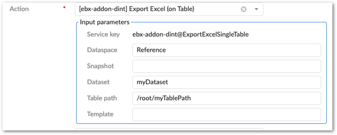
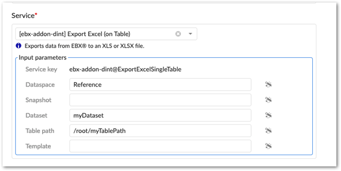

Administrators can enable add-on import, export, and transfer functionality in workflows and perspectives. These actions are available as services and actions in workflows and perspectives, respectively. See the EBX® product documentation for more information on working with perspectives and workflows.
To enable data integration in a perspective or workflow:
When configuring a:
Perspective: select the appropriate action from the drop-down menu.
The add-on specific actions begin with [ebx-addon-dint]. There are two options for each import, export and transfer type. This allows you to specify whether the action applies to the selected table, or dataset.

Workflow: select the appropriate service from the drop-down menu.
The add-on specific actions begin with [ebx-addon-dint]. There are two options for each import, export and transfer type. This allows you to specify whether the action applies to the selected table, or dataset.

Use the required Input parameters to specify the location where you want to service or action to be active.
Optionally, specify a Template parameter.
If you specify a template, users cannot change the template during import, export, or transfer. Additionally, you might want to keep in mind that not all users can access each template.
Complete remaining workflow or perspective configuration steps. See the EBX® product documentation for more information on creating workflows and perspectives and how they work.